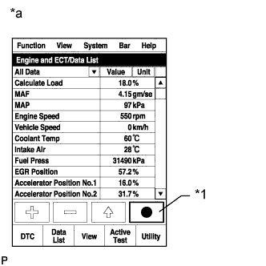

СИСТЕМА ECD (для моделей с DPF) > Система впрыска топлива |
| 1.ПРОВЕРЬТЕ КОМПЕНСАЦИОННЫЙ КОД ФОРСУНКИ |
Проверьте компенсационный код форсунки (Нажмите здесь).
| Результат | Следующий шаг |
| Любое состояние, кроме описанного ниже | А |
| Компенсационные коды установленных форсунок в сборе совпадают с компенсационными кодами, зарегистрированными в ЕСМ. | B |
|
| ||||
| А | |
| 2.ЗАРЕГИСТРИРУЙТЕ КОМПЕНСАЦИОННЫЙ КОД ФОРСУНКИ И ПРОИЗВЕДИТЕ НАСТРОЙКУ ОБЪЕМА ПРЕДВАРИТЕЛЬНОГО ВПРЫСКА |
Зарегистрируйте компенсационные коды форсунок (Нажмите здесь).
Произведите настройку объема предварительного впрыска (Нажмите здесь).
| ДАЛЕЕ | |
| 3.ЗАФИКСИРУЙТЕ МГНОВЕННЫЕ ЗНАЧЕНИЯ ПАРАМЕТРОВ В РЕЖИМЕ ХОЛОСТОГО ХОДА И ПРИ ЧАСТОТЕ ВРАЩЕНИЯ 4000 ОБ/МИН (ПРОЦЕДУРА 3) |
Подсоедините портативный диагностический прибор к DLC3.
Запустите двигатель и включите портативный диагностический прибор.
Войдите в следующие меню: Powertrain / Engine and ECT / Data List / All Data.
|  |
Зафиксируйте мгновенные значения следующих параметров Data List.
| *1 | Кнопка фиксации мгновенных значений параметров |
| *a | Для справки |
| ДАЛЕЕ | |
| 4.СНИМИТЕ ПОКАЗАНИЯ ПОРТАТИВНОГО ДИАГНОСТИЧЕСКОГО ПРИБОРА (INJECTION FEEDBACK VAL #1 TO #4 И INJECTION VOLUME) |
Проверьте значения Feedback Val #1 - #4 и Injection Volume из данных фиксированного набора параметров, полученных при выполнении процедуры 3 в режиме холостого хода и на частоте вращения 4000 об/мин при работе двигателя без нагрузки.
| Результат | Перейти к |
| Значение Feedback Val, по крайней мере, для одного цилиндра превышает 3,0 мм3/ход | А |
| Параметр Injection Volume имеет величину не более 10 мм3/ход при 4000 об/мин | B |
| За исключением указанного выше | C |
|
| ||||
|
| ||||
| А | |
| 5.ВЫПОЛНИТЕ АКТИВНУЮ ДИАГНОСТИКУ С ПОМОЩЬЮ ПОРТАТИВНОГО ДИАГНОСТИЧЕСКОГО ПРИБОРА (CHECK THE CYLINDER COMPRESSION) |
Подсоедините портативный диагностический прибор к DLC3.
Запустите двигатель и включите портативный диагностический прибор.
Войдите в следующие меню: Powertrain / Engine and ECT / Active Test / Check the Cylinder Compression / Data List / Compression / Engine Speed of Cyl #1 – #4.
Проверьте частоту вращения коленчатого вала двигателя в режиме Active Test.
| Результат | Перейти к |
| Любое состояние, кроме описанного ниже | А |
| Значения параметров Engine Speed Cyl #1 – #4 не отличаются друг от друга более чем на +/-10 об/мин. | B |
|
| ||||
| А | |
| 6.ПРОВЕРЬТЕ ДАВЛЕНИЕ СЖАТИЯ В ЦИЛИНДРЕ |
Проверьте давление сжатия в цилиндре (Нажмите здесь).
|
| ||||
| OK | |
| 7.НАСТРОЙТЕ ОБЪЕМ ПРЕДВАРИТЕЛЬНОГО ВПРЫСКА |
Произведите настройку объема предварительного впрыска (Нажмите здесь).
| ДАЛЕЕ | |
| 8.СНИМИТЕ ПОКАЗАНИЯ ПОРТАТИВНОГО ДИАГНОСТИЧЕСКОГО ПРИБОРА (ЗНАЧЕНИЕ ОБРАТНОЙ СВЯЗИ О ВПРЫСКЕ #1 ДO #4) |
Подсоедините портативный диагностический прибор к DLC3.
Включите зажигание (IG) и портативный диагностический прибор.
Запустите и прогрейте двигатель.
Войдите в следующие меню: Powertrain / Engine and ECT / Data List / Injection Feedback Val #1 – #4.
Считайте значения.
| Информация на дисплее прибора | Режим работы двигателя* | Номинальное значение |
| Injection Feedback Val #1 Injection Feedback Val #2 Injection Feedback Val #3 Injection Feedback Val #4 | Холостой ход | От -3,0 мм3/ход до 3,0 мм3/ход |
| Результат | Перейти к |
| Значение Feedback Val, по крайней мере, для одного цилиндра превышает 3,0 мм3/ход | А |
| За исключением указанного выше | B |
|
| ||||
| А | |
| 9.ЗАМЕНИТЕ НЕИСПРАВНУЮ ФОРСУНКУ ЦИЛИНДРА |
Замените форсунку неисправного цилиндра в сборе (Нажмите здесь).
|
| ||||
| 10.СНИМИТЕ ПОКАЗАНИЯ ПОРТАТИВНОГО ДИАГНОСТИЧЕСКОГО ПРИБОРА (INJECTION VOLUME) |
Проверьте значение Injection Volume в наборе мгновенных значений параметров, зафиксированных в процедуре 3 в режиме холостого хода двигателя.
| Результат | Следующий шаг |
| Давление топлива на холостом ходу после прогрева двигателя составляет не менее 15 мм3/ход | А |
| За исключением указанного выше | B |
|
| ||||
| А | |
| 11.ЗАМЕНИТЕ ФОРСУНКИ ВСЕХ ЦИЛИНДРОВ В СБОРЕ |
Замените форсунки в сборе всех цилиндров (Нажмите здесь).
| ДАЛЕЕ | |
| 12.ЗАМЕНИТЕ ФИЛЬТРУЮЩИЙ ЭЛЕМЕНТ ТОПЛИВНОГО ФИЛЬТРА В СБОРЕ |
Замените фильтрующий элемент топливного фильтра в сборе (Нажмите здесь).
| ДАЛЕЕ | |
| 13.УДАЛИТЕ ВОЗДУХ ИЗ ТОПЛИВНОЙ СИСТЕМЫ |
Удалите воздух из топливной системы (Нажмите здесь).
| ДАЛЕЕ | |
| 14.ЗАРЕГИСТРИРУЙТЕ КОМПЕНСАЦИОННЫЙ КОД ФОРСУНКИ И ПРОИЗВЕДИТЕ НАСТРОЙКУ ОБЪЕМА ПРЕДВАРИТЕЛЬНОГО ВПРЫСКА |
Зарегистрируйте компенсационные коды форсунок (Нажмите здесь).
Произведите настройку объема предварительного впрыска (Нажмите здесь).
|
| ||||
| 15.ПРОВЕРЬТЕ И ЗАМЕНИТЕ ДВИГАТЕЛЬ В СБОРЕ |
Проверьте и замените двигатель в сборе.
| ДАЛЕЕ | |
| 16.ВЫПОЛНИТЕ ДИАГНОСТИКУ В РЕЖИМЕ ACTIVE TEST С ПОМОЩЬЮ ПОРТАТИВНОГО ДИАГНОСТИЧЕСКОГО ПРИБОРА (ИСПЫТАНИЕ НА ГЕРМЕТИЧНОСТЬ) |
Подсоедините портативный диагностический прибор к DLC3.
Включите зажигание (IG) и портативный диагностический прибор.
Войдите в следующие меню: Powertrain / Engine and ECT / Active Test / Test the Fuel Leak / Data List / Fuel Press, Target Common Rail Pressure и Target Pump SCV Current.
Запустите двигатель.
С помощью портативного диагностического прибора зафиксируйте значения параметров при работе в режиме Active Test.
| *1 | Кнопка фиксации мгновенных значений параметров |
| *a | Для справки |
Измерьте разность между заданным давлением в топливной системе (Target Common Rail Pressure) и фактическим давлением в топливной системе (Fuel Press) при выполнении испытания Active Test "Test the Fuel Leak".

| Результат | Следующий шаг |
| NG | А |
| OK | B |
|
| ||||
| А | |
| 17.ПРОВЕРЬТЕ, ПОДАЕТСЯ ЛИ ТОПЛИВО В НАГНЕТАЮЩИЙ НАСОС |
Отсоедините топливопровод № 2 от нагнетающего насоса в сборе (Нажмите здесь).
Приводя в действие подкачивающий насос, проверьте, подается ли топливо в нагнетающий насос.
Подсоедините топливопровод № 2 (Нажмите здесь).
|
| ||||
| OK | |
| 18.ПРОВЕРЬТЕ ТОПЛИВНУЮ СИСТЕМУ COMMON RAIL В СБОРЕ (КЛАПАН СБРОСА ДАВЛЕНИЯ) |
Проверьте топливную систему Common Rail в сборе (Нажмите здесь).
|
| ||||
| OK | |
| 19.ЗАМЕНИТЕ КЛАПАН РЕГУЛИРОВАНИЯ ВСАСЫВАНИЯ |
Замените клапан регулирования всасывания (Нажмите здесь).
| ДАЛЕЕ | |
| 20.УДАЛИТЕ ВОЗДУХ ИЗ ТОПЛИВНОЙ СИСТЕМЫ |
Удалите воздух из топливной системы (Нажмите здесь).
| ДАЛЕЕ | |
| 21.ВЫПОЛНИТЕ ИНИЦИАЛИЗАЦИЮ НАГНЕТАЮЩЕГО НАСОСА |
Выполните инициализацию нагнетающего насоса (Нажмите здесь).
|
| ||||
| 22.ЗАМЕНИТЕ СИСТЕМУ COMMON RAIL В СБОРЕ (КЛАПАН СБРОСА ДАВЛЕНИЯ) |
Замените топливную систему Common Rail в сборе (Нажмите здесь).
|
| ||||
| 23.ПРОВЕРЬТЕ И ОТРЕМОНТИРУЙТЕ ИЛИ ЗАМЕНИТЕ ЗАСОРЕННЫЙ ТОПЛИВОПРОВОД (В ТОМ ЧИСЛЕ ПРИ ЗАМЕРЗАНИИ ТОПЛИВА) |
Проверьте и отремонтируйте или замените засоренный топливопровод (в том числе при замерзании топлива).
| ДАЛЕЕ | |
| 24.УДАЛИТЕ ВОЗДУХ ИЗ ТОПЛИВНОЙ СИСТЕМЫ |
Удалите воздух из топливной системы (Нажмите здесь).
| ДАЛЕЕ | |
| 25.СНИМИТЕ ПОКАЗАНИЯ ПОРТАТИВНОГО ДИАГНОСТИЧЕСКОГО ПРИБОРА (FUEL PRESS И TARGET COMMON RAIL PRESSURE) |
Проверьте значения Fuel Press и Target Common Rail Pressure из данных фиксированного набора параметров, полученных при выполнении процедуры 3 в режиме холостого хода.
| Результат | Перейти к |
| Значение Fuel Press превышает Target Common Rail Pressure более чем на 5000 кПа (51,0 кгс/см2, 725 фунтов на кв. дюйм) | А |
| За исключением указанного выше | B |
|
| ||||
| А | ||
| ||
| 26.ЗАМЕНИТЕ КЛАПАН РЕГУЛИРОВАНИЯ ВСАСЫВАНИЯ |
Замените клапан регулирования всасывания (Нажмите здесь).
| ДАЛЕЕ | |
| 27.УДАЛИТЕ ВОЗДУХ ИЗ ТОПЛИВНОЙ СИСТЕМЫ |
Удалите воздух из топливной системы (Нажмите здесь).
| ДАЛЕЕ | |
| 28.ВЫПОЛНИТЕ ИНИЦИАЛИЗАЦИЮ НАГНЕТАЮЩЕГО НАСОСА |
Выполните инициализацию нагнетающего насоса (Нажмите здесь).
| ДАЛЕЕ | ||
| ||